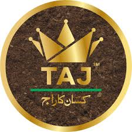
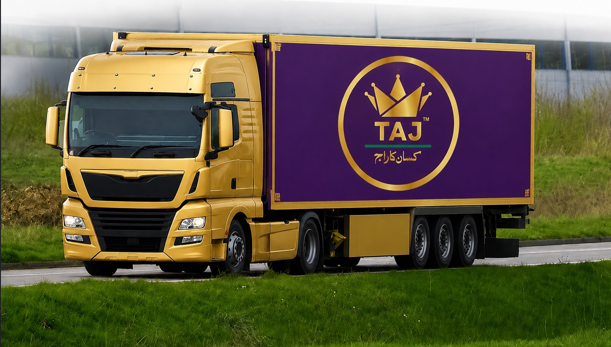
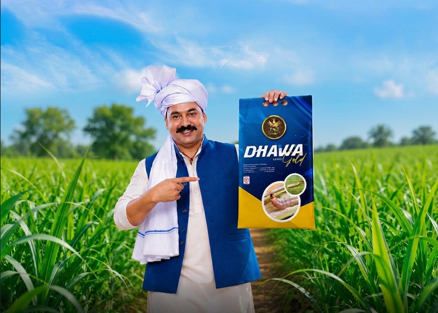
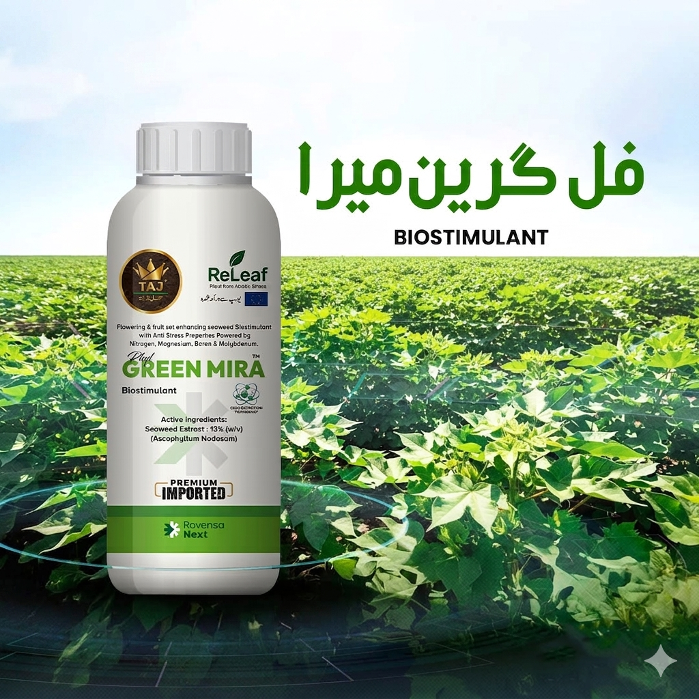

TAJ Group stands out as a premier agrochemical company in Pakistan, recognized for its wide range of high-quality agricultural solutions. We provide sustainable farming support through a structured approach that evaluates our complete product portfolio against clearly defined sustainability standards. This enables us to direct our strong research and development efforts toward more innovative and environmentally responsible solutions from the very beginning.
In doing so, we ensure that our advancements in crop protection, vegetable seeds, and trait development deliver greater value to farmers across the country. We continuously focus on sourcing and introducing unique, high-quality agricultural chemicals from around the world that add significant value to Pakistan’s agriculture sector. Every product in our portfolio is carefully assessed for its role in promoting sustainable agriculture. This reflects our commitment to treating non-financial goals with the same importance as financial performance.
Field Team
Loyal Business Partners
Complete control of sugarcane borers vigorous crop growth and the confidence of higher yields only with Dhawa Gold. Powered by an advanced and highly effective formulation, Dhawa Gold provides strong protection against damaging sugarcane borers, helping your crop stay healthy, vigorous, and productive throughout the season. Trusted by farmers for reliable performance, stronger plant development, improved crop quality, and maximum profitability, Dhawa Gold is the smart choice for successful sugarcane cultivation.


Green Mira The Crop Protection Vaccine for Stronger Growth and Better Yields. Green Mira helps safeguard your crops before stress strikes, providing advanced protection against disease pressure and extreme heat conditions. By supporting plant health and vitality, it helps reduce flower and fruit drop, promotes stronger flowering and fruit setting, and enables crops to maintain their productivity even under challenging environmental conditions. With Green Mira, your crop stays healthier, more resilient, and better prepared for a successful harvest.
Taj Company is committed to the principles of research, innovation, and quality production. Our expert team continuously works to develop effective and advanced agricultural solutions by addressing modern farming challenges and the evolving needs of growers. Through continuous research and the use of advanced technology, we introduce products that help improve crop health, yield, and overall quality. Our state-of-the-art production facilities and strict quality control systems ensure that every product meets high standards of reliability and performance. This dedication to excellence makes Taj a trusted and progressive name in the agricultural industry.